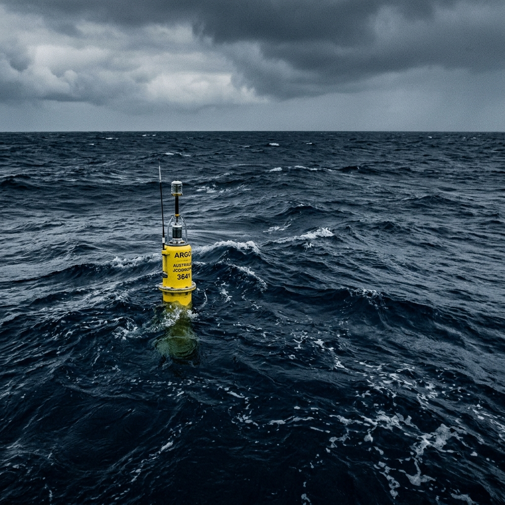
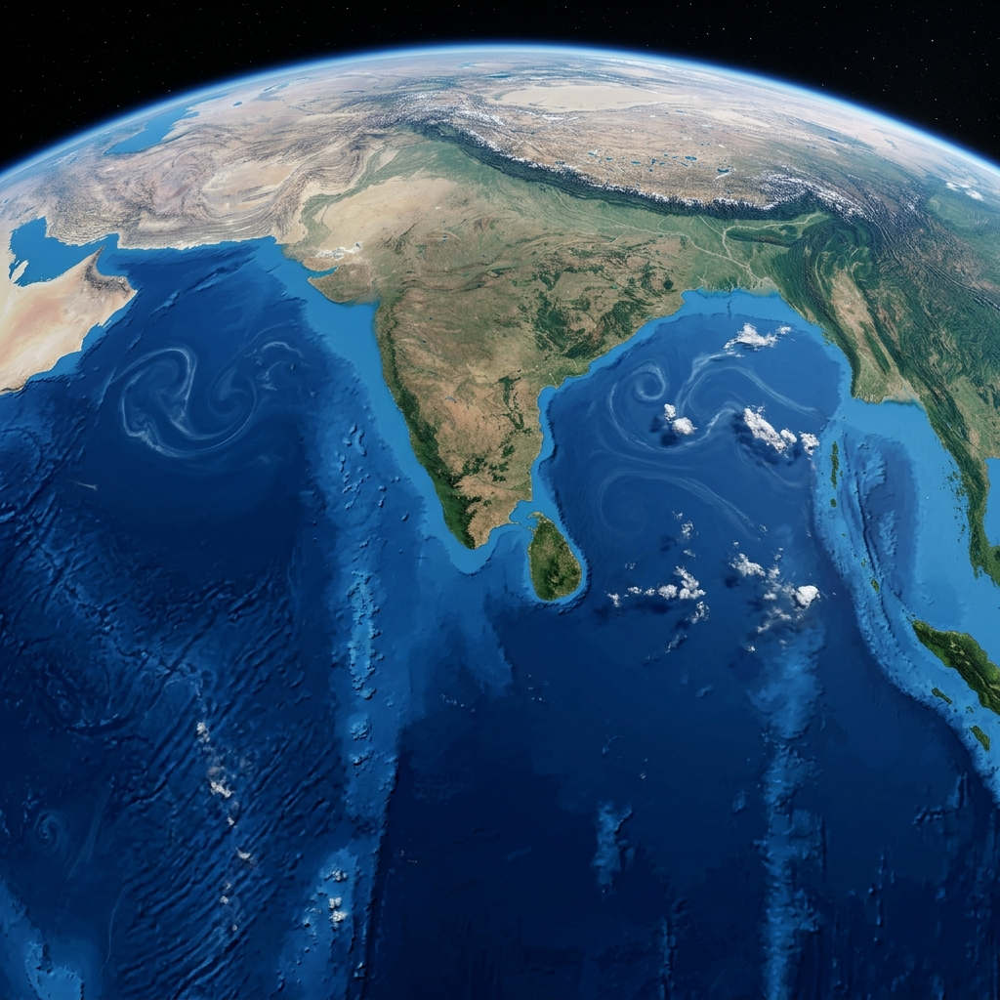

SIH PS 26066
Reconstructing Subsurface Oceans
Transforming 2D satellite surface observations into 3D subsurface temperature profiles using advanced representation learning.
Direct measurements of subsurface temperature rely heavily on in-situ systems like ARGO profiling floats. Their spatial and temporal coverage is simply insufficient for generating continuous, basin-scale subsurface fields crucial for monitoring marine heatwaves, ecosystems, and climate variability.

Surface variables—SST, Salinity, Sea Level Anomaly, and Currents—contain indirect signatures of deep ocean processes. By generating compact satellite embeddings via deep learning architectures like Vision Transformers (ViT) and ConvLSTMs, we reconstruct the vertical temperature structure purely from orbit.
